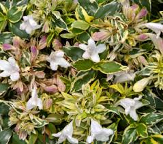
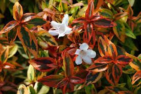
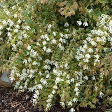
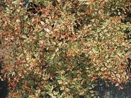
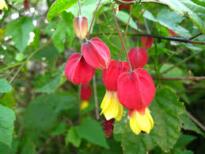
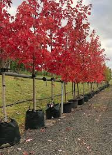
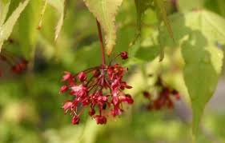
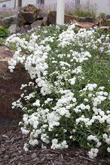

| Products | Description | Price |
|---|---|---|
|  Abelia lime splice flower |
The Abelia Lime Splice produces fragrant, white blooms that tend to attract butterflies. | $30 |
|  Abelia kaleidoscope flower |
Abelia Kaleidoscope brings dynamic colour that foliage throughout the year. | $20 |
|  Loropetalum topiary flower |
Featuring mid-green foliage with coppery new growth tips and crisp white tassel-like flowers. | $50 |
|  Abelia sunrise flower |
The Abelia Sunrise produces masses of long lasting, fragrant, white flowers on arching branches that attract bees and butterflies. | $20 |
|  Abutilon megapotamicum flower |
The abutilon megapotamicum is red and yellow flower which resembles Chinese lanterns in Summer, Autumn and into Winter as well as attracing butterflies. | $40 |
|  Acer blaze flower |
The acer blaze flower is an excellent autumn colouring. This flower is great around trees buildings and avenue planting. | $50 |
|  Acer palmatum flower |
Know as the japense maple flower its breathtaking, beautifully coloured which is seen during autumn. This leaves a smooth attractive growth around trees that take on a graceful shape as they mature. | $15 |
|  Achilliea angels breath flower |
The Achilliea angel breath flower blooms from late spring through to autumn. This flower grows fast and has a hardy plant in most conditions. | $20 |